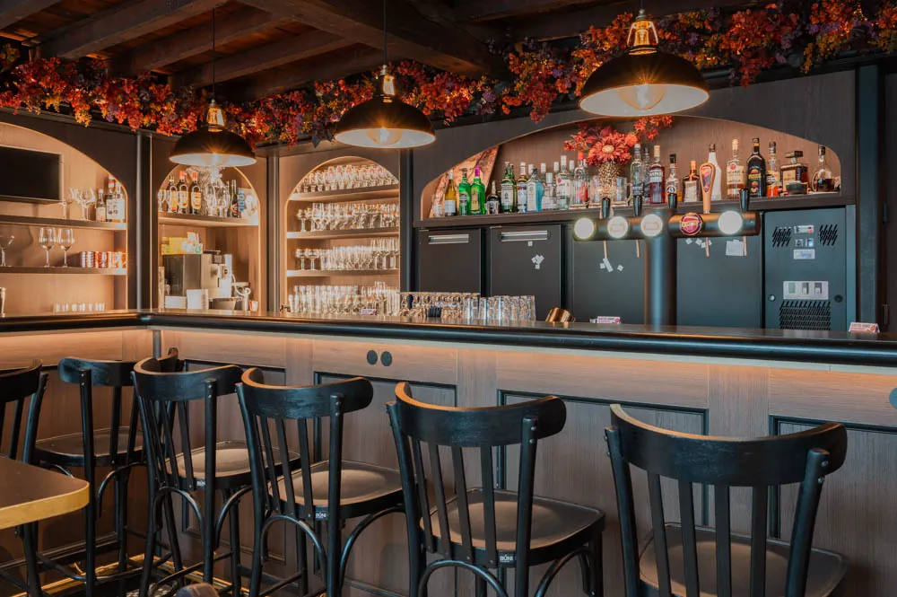

Realisaties
Onze realisaties
Ontdek onze schrijnwerkprojecten. Klik op een project en blader door het volledige verhaal.
Maak je houtdromen waar
Laten we samen iets blijvends bouwen.
Een kast op maat, een volledige keuken, een poolhouse of een totaalproject. Vertel ons wat u voor ogen heeft — we denken graag mee.